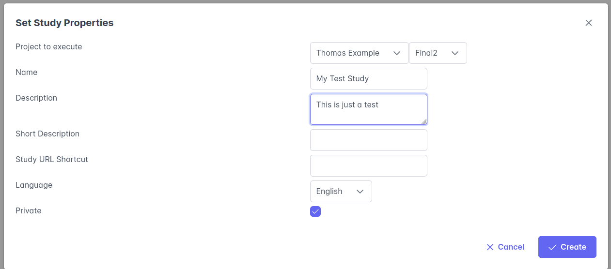
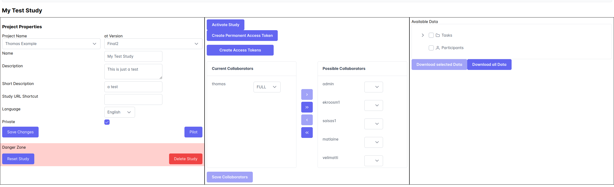

Quickstart : Study
This guide shows you how to set up a new project and how to use it in SOILE. Let’s begin
Initialize a new Study
To create a Study you go to Study Management -> Create Study, which will lead you to the following view

You have to give the study a Name and a Description and, most importantly select a Project at a specific version that this study will run. NOTE: Even if the project gets deleted from the UI, the study will still run and the data correct Project will still be used.
Study View

In the study view, you can activate the study and change it’s properties. You can add collaborators to the study with different levels of access, READ allows reading the participant data, full allows modification of the study. Once a study is activated and has participants, the Project and project version cannot be changed. This is to ensure data integrity in studies, since a change in the study could lead to the comparision of different types of data. Once you activate a study, there will be a link that you can copy and provide to your participants. If you want to require a access token, you can create permanent (useable multiple times) or individual access tokens, which will be excahnged for a participation token. Data from participants will be visible in the Available Data view.